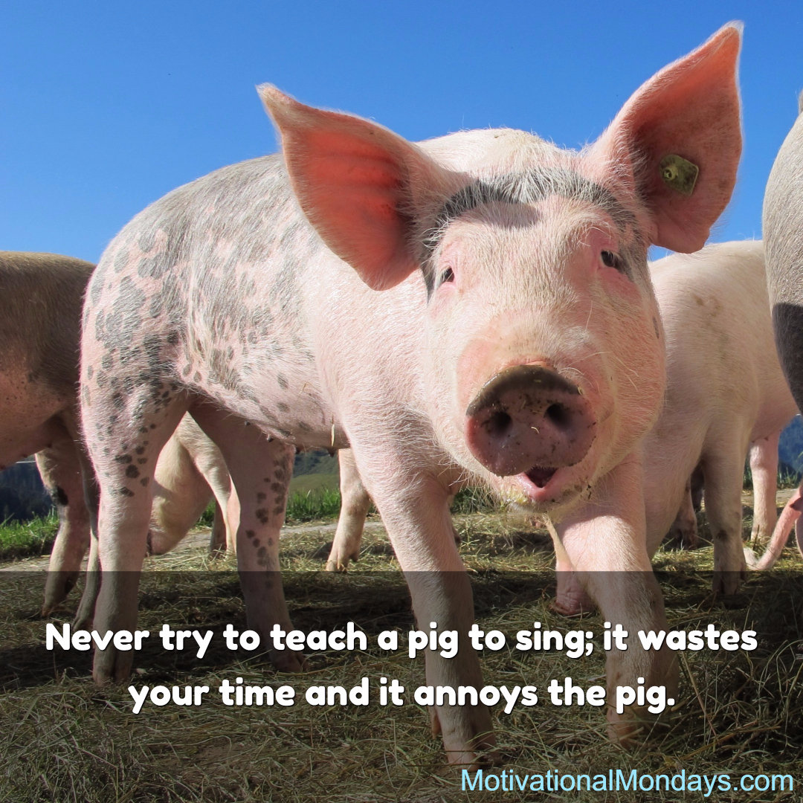
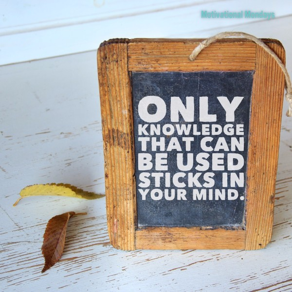
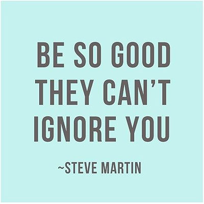
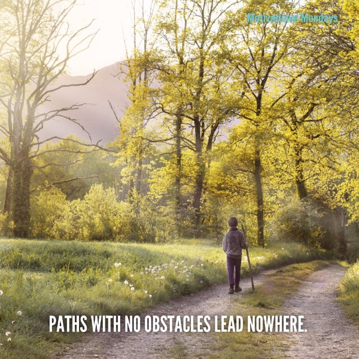
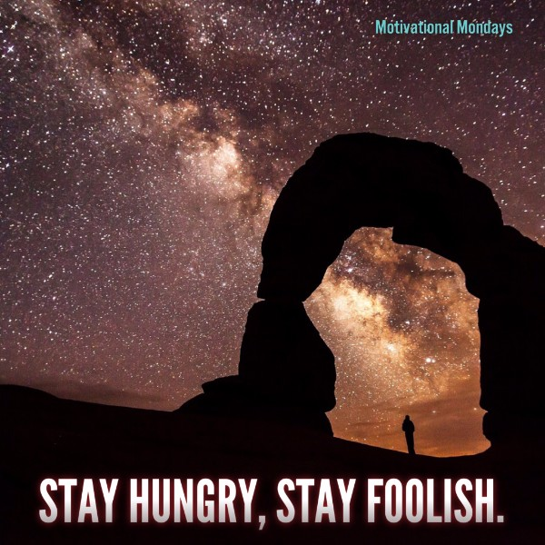
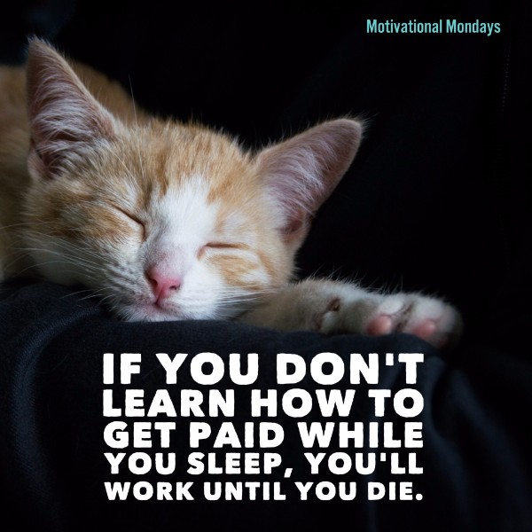

More Motivation
An archive of all previous Motivational Mondays
Motivational Monday #15| Be Creative
Pour Your Heart Into It by Howard Schultz Howard Schultz is a legend - he built a coffee shop into an empire, all while maintaining its renowned commitment to product excellence and employee satisfaction. The overwhelming feeling throughout this book was how much Howard Schultz focused on and cared about the people working with him and the principle that a company must stand for something more than just business. Click here to read some of my favorite highlights.
"If at first, the idea is not absurd, then there is no hope for it." ― Albert Einstein
A king demands a tax of 1,000 gold coins from each of 10 regions in his nation. The tax collector for each region brings him the requested bag of gold coins at year end. An informant tells the king that one tax collector is cheating and giving coins that are consistently 10% lighter than they should be, but he does not know which collector is cheating. The king knows that one coin should weigh exactly one ounce. How can the king identify the cheat by using a weighing device exactly once?
Audible for audiobooks. Audiobooks: for listening anytime, anywhere. This is one of my favorite ways to get through more books. At the gym, stuck in traffic, at the beach - audiobooks are a perfect way to get some extra reading done. Click here to download your first two books free.
If you enjoyed this email, please share it with a friend!
Click Here to SubscribeMotivational Monday #14| Go Further
Everything You Know About Addiction Is Wrong "You would have noticed if your grandmother had a hip replacement, she didn’t come out as a junkie." Johann Hari gives a TED talk that takes a new look at addiction and how to solve it. One country decriminalized all drugs, from cannabis to crack and something unexpected happened... Watch here
"I've missed more than 9000 shots in my career. I've lost almost 300 games. 26 times, I've been trusted to take the game-winning shot and missed. I've failed over and over and over again in my life. And that is why I succeed." ~ Michael Jordan
"Why shouldn't we hire you for this job?" This is an interview question that has come up, how would you answer it? Picture yourself in a live interview as you think this one through. Hit reply and let me know your answers.
Trello Infinitely flexible. Incredibly easy to use. Web and app based. It's free. It keeps track of everything, from the big picture to the minute details. If you love project management or to-do lists then you owe it to yourself to try Trello for at least one week. Find out more here. Trello is in my top 3 apps and I use it EVERY day.

If you enjoyed this email, please share it with a friend!
Click Here to SubscribeMotivational Monday #13| No Limits
Either "HELL YEAH!" or "no" By Derek Sivers. When you say no to most things, you leave room in your life to really throw yourself completely into that rare thing that makes you say “HELL YEAH!”. Read now
"The reason that most of us are unhappy most of the time is that we set our goals not for the person we're going to be when we reach them, but we set our goals for the person we are when we set them." ~ Jim Coudal
You hire a man to work in your kingdom for seven days. You wish to pay him in gold. You have one gold bar that can break into seven equal parts, same height and width. You wish to pay him one gold part per day, but you may only snap the bar in only two places. Where do you snap the bar so that you may pay him at the end of each day, and so that on the successive days he may use what you paid him previously to make change?
Stop losing sleep by looking at a poorly lit computer screen. Flux is an app that makes the color of your computer's display adapt to the time of day, warm at night and like sunlight during the day. This helps you feel better and sleep better. Find out more about the app here.

If you enjoyed this email, please share it with a friend!
Click Here to SubscribeMotivational Monday #12| Stay Hungry, Stay Foolish
1,000 True Fans Everyone seems so focused on getting millions of fans and going viral. This article by Kevin Kelly will give you a new perspective and explain how 1,000 true fans can be more powerful than 1 million ordinary fans. Read now
"Out on the edge you see all kinds of things you can't see from the center. Big, undreamed-of things-the people on the edge see them first." ~ Kurt Vonnegut
Why are images in a mirror flipped horizontally and not vertically? For example, although I wear a watch on my left hand, and my reflection wears his on his right hand, my reflection is not standing on his head.
Glasses by Gunnar - if you spend a large portion of your time working on a computer monitor then these glasses are for you. They help protect and enhance your vision through the use of their specially designed lenses. Find out more about them here.
If you enjoyed this email, please share it with a friend!
Click Here to SubscribeMotivational Monday #11| Think It Through
"If you have self-confidence, good things are going to happen to you. "
Tally Counters - This is the simplest app for getting things done. You make tally counters and control their starting value and how much they uptick/downtick by. Generally, I start with a fresh value each week with the goal of working towards zero. I use a counter for: reading sessions, house projects, podcasts listens, sessions of learning, and a discretionary budget. Check out more info here
Who can build the tallest freestanding structure out of basic ingredients in a limited amount of time? In almost every instance kindergartners beat MBA students. Click here to read about the challenge and learn business management tips. Marshmallow Challenge
Take a sick day "personal day" - I challenge you to take one "true" personal day this month. Make it a day that is all about relaxing, clearing your head, binging on Netflix, whatever it takes. Use it as a day to reset. Sometimes we run so hard that the only breaks we take are when we're finally sick. Instead, try taking a break when you're feeling good.

If you enjoyed this email, please share it with a friend!
Click Here to SubscribeMotivational Monday #10| Ready Set, Go!
"The intuitive mind is a sacred gift and the rational mind is a faithful servant. We have created a society that honors the servant and has forgotten the gift." ~ Albert Einstein
Red Oaks After a long day this series has been perfect to cultivate a positive mood. It's short (less than 25 minutes an episode), based in the 80s, and very witty. You can find it on AmazonPrime.
Why are images in a mirror flipped horizontally and not vertically? For example, although I wear a watch on my left hand, and my reflection wears his on his right hand, my reflection is not standing on his head.
Give a compliment a day - this week's challenge. Each day, make a point of giving out at least one compliment. At the end of each day or whenever is convenient make a point to write down the following : 1) What the compliment was 2) To whom it was given 3) How the person reacted / how you made them feel 4) How it made you feel. If you're willing to share I'd love to hear how this went - just reply back. Start your year off right and give this a try.
If you enjoyed this email, please share it with a friend!
Click Here to SubscribeMotivational Monday #9| Onward
"Dreams are renewable. No matter what our age or condition, there are still untapped possibilities within us and new beauty waiting to be born." ~ Dale E Turner
Typing Races - This app is awesomely addicting. Find out your typing speed, challenge friends and even make the leaderboard. Click here to find out how fast you type!
You receive eight balls. They are identical except that one is heavier than the rest. You have access to a scale but it cost $10 per use. What is the least amount you can spend to find which ball is the heaviest and how?
DRINK WATER - this week's challenge. Use this email to make this the week you really drink some water. Challenge: 2 liters or a half gallon per day for 1 week. *In addition to other sources of water* At the end of the week see how you feel (email me back). I'll be willing to bet you've found one of the simplest productivity hacks. In doing this you'll flush toxins out of vital organs, carries nutrients to your cells, help your immune system and gain more energy.
If you enjoyed this email, please share it with a friend!
Click Here to SubscribeMotivational Monday #8
"Go out and do something, it isn't your room that's a prison, it's yourself." ~ Sylvia Path
Jiro Dreams of Sushi. This documentary proves that there is no boundary when in the pursuit of mastering your craft. Watch Trailer
There are three boxes, one contains only apples, one contains only oranges, and one contains both apples and oranges. The boxes have been incorrectly labeled such that no label identifies the actual contents of the box it labels. Opening just one box, and without looking in the box, you take out one piece of fruit. By looking at the fruit, how can you immediately label all of the boxes correctly? Which box should you choose from?
Here's a new routine I'm using to improve the day and read more. It's only an additional 32 minutes in the morning. 1) Read daily affirmations 2) Meditate with Headspace 3) Read for 20min. I plan to try this for a month and will write a deeper post about the results. The reading portion alone will add 21 extra books to your shelf in a year.

If you enjoyed this email, please share it with a friend!
Click Here to SubscribeMotivational Monday #7
"The difference between the top 25% and the top 1% is your ability to define and stay focused on your goals."
187 pages that will cause you to rethink leadership. "Most people want to be involved but nobody wants to be committed." - The Servant. Learn to lead by Serving. My highlights and link to purchase here.
A snail is climbing a 10-foot flag pole. He climbs up three feet every 45 minutes. He likes to take naps for 15 minutes after climbing. While sleeping, he slides down by one foot. How long until he reaches the top of the pole?
Tools of Titans Foreword - Arnold Schwarzenegger. "I am not a self-made man." If you want to be the best, read this.
 
If you enjoyed this email, please share it with a friend!
Click Here to SubscribeMotivational Monday #6
"Thin slices of joy occur in life everywhere… and once you start noticing it, something happens, you find it’s always there. Joy becomes something you can count on." ~ Chade-Meng Tan, Google Employee 107
Steve Jobs, love him or not this is one of the BEST bits of marketing advice you will find. It applies to current times more than ever.
You're trying to crack a three-number dial safe. Without knowing the combination numbers, what is the maximum number of trials required to open the safe? A trial is considered a full three-number combination. There are 40 numbers on this safe. To enter a combination you start with the dial at zero and turn counter-clockwise until the first number, then clockwise back to zero, then clockwise to the second number, then counter-clockwise back to zero, and finally counter-clockwise to the third number. Upon the correct combination, the safe will spring open.
How to become the best - Career Advice from Dilbert. A simple yet eye-opening way to differentiate yourself from everyone.
If you enjoyed this email, please share it with a friend!
Click Here to SubscribeMotivational Monday #5
"Borrow liberally, combine uniquely, and create your own bespoke blueprint." ~ Tim Ferris
What is the angle (if any) between the hour and minute hands of a clock when the time is 9:45?
100 Blocks a Day by Tim Urban Where is your time truly going and is it where you want? Try this experiment and find out.
All Metal Tap Knife (Pack of 12) $6.20 You need these! The 12 pack is perfect. It's a perfectly simplistic box cutter. You'll end up leaving one in every room and drawer in your home. I'm amazed at how often I find myself using these and the convenience they offer.

If you enjoyed this email, please share it with a friend!
Click Here to SubscribeMotivational Monday #4
"You should measure yourself in the spirit of improving upon your last best record, not what an opponent has accomplished. Leaderboards turn your attention to others; dashboards turn your attention within." Only you can define your true potential.
You start with a single lily pad sitting on an otherwise empty pond. You are told that the surface area of the lily doubles every day and that it will take 30 days for the single lily to cover the surface of the pond. | If instead of one lily pad you start with eight lily pads (each identical in characteristics to the original lily), how many days will it take for the surface of the pond to be covered? Assume that they don't overlap each other.

If you enjoyed this email, please share it with a friend!
Click Here to SubscribeMotivational Monday #3
"You will never get any more out of life than you expect." ~ Bruce Lee
Your sock drawer contains 11 red socks and 15 blue socks. Your light isn't working and you must select your socks without seeing them. What is the minimum number of socks you need to take from your drawer and carry to a well-lit room to guarantee at least a matching pair?
The great secret of our time is that there are still uncharted frontiers to explore and new inventions to create. In Zero to One, legendary entrepreneur and investor Peter Thiel shows how we can find singular ways to create those new things. Think bigger. Click here to see my highlights from the book.
Waking up early and to my first alarm rather than my tenth snooze has always been a struggle. I've been trying this solution (specifically the counting down portion) and have been gaining success over the mornings. Read the top Reddit answer.
If you enjoyed this email, please share it with a friend!
Click Here to SubscribeMotivational Monday #2
"Before you act, listen. Before you react, think. Before you spend, earn. Before you criticize, wait. Before you pray, forgive. Before you quit, try." ~ Ernest Hemingway
Picture a 10 x 10 x 10 "macro-cube" floating. The macro-cube is composed of 1 x 1 x 1 "micro-cubes", all stuck together. Through some damage, the exposed (outermost) layer of micro-cubes loosen and fall to the ground. How many micro-cubes are on the ground?
Pomodoro Technique is a time management method I've been trying. It's all about breaking down work into shorter intervals. By breaking tasks into shorter intervals you're able to perform will little to no fatigue.
"Golden Hour", if you're a photographer you know this term; if not, it's the time of day when the sunlight looks downright perfect. For more on Golden Hour Click Here. The app Rizon, let's you know when Golden Hour is and provides a reminder just before. Of course, you can Google the time but there's something refreshing about simple apps.
The myth of low-hanging fruit - Jason Fried (Founder & CEO at Basecamp and NYT bestselling author). An interesting way to look at what may seem to be "low-hanging fruit".
If you enjoyed this email, please share it with a friend!
Click Here to SubscribeMotivational Monday #1
"Opportunities are never lost; someone will take the one you missed." ~ Anonymous
Four people need to cross a rickety bridge at night. Unfortunately, they have only one torch and the bridge is too dangerous to cross without one. The bridge is only strong enough to support two people at a time. Not all people take the same time to cross the bridge. Times for each person: 1 min, 2 mins, 7 mins and 10 mins. What is the shortest time needed for all four of them to cross the bridge?
How do you define success? An older post I wrote but one I find helpful to reread often. Don't trap yourself in a rat race.
Shoe Dog: A Memoir by the Creator of Nike This book is down right awesome and easily jumps into my top 10. The story has you on the edge of your seat the entire book. If you read this and don't come away thinking you're unstoppable we need to talk. Click here to read some of my favorite highlights.
The Design Process: A Pyramid - by Will Newton First, start with the Mission, the Soul, the ‘Why?’
